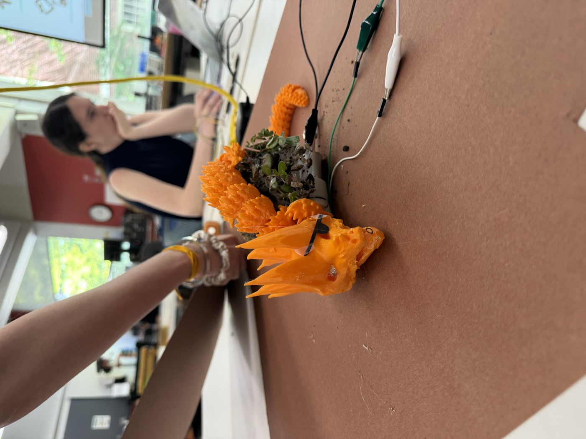
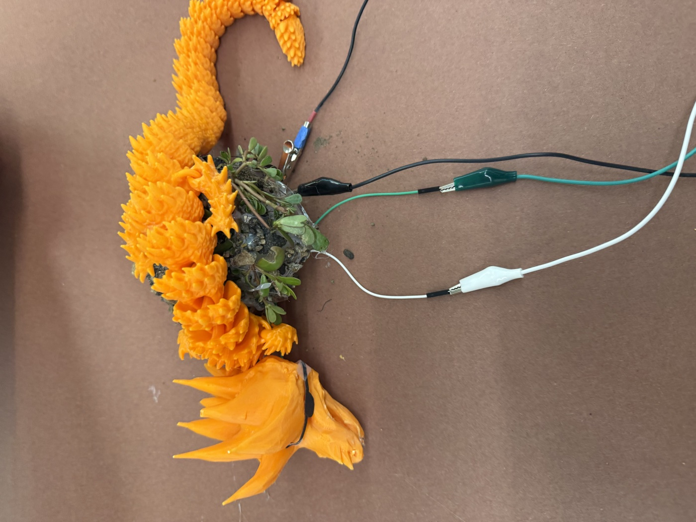
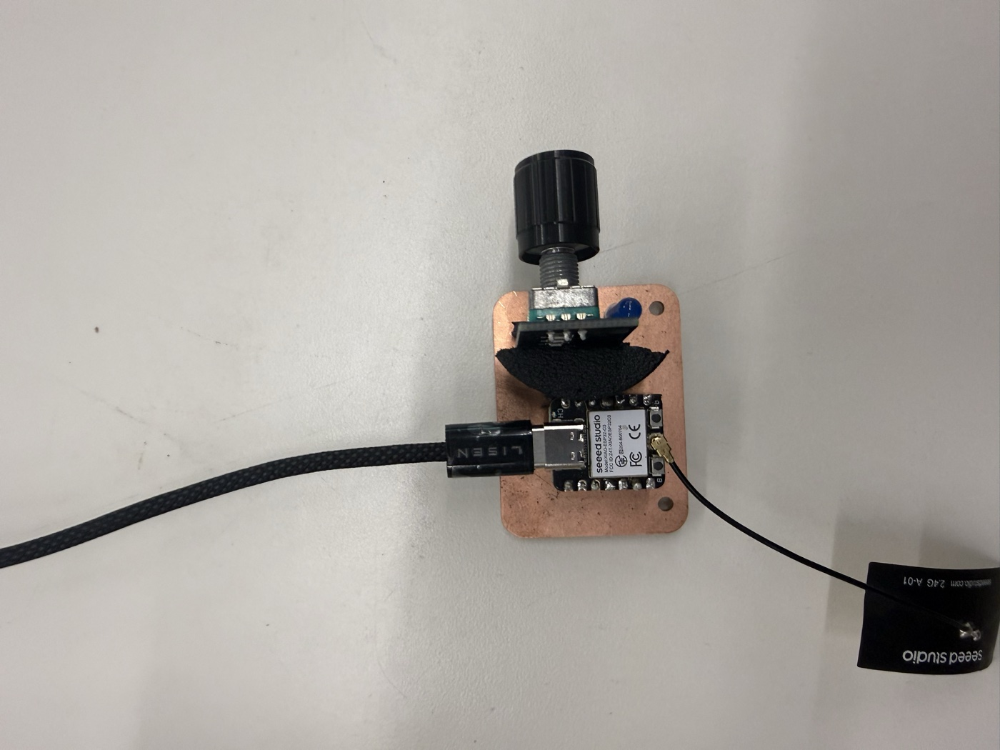
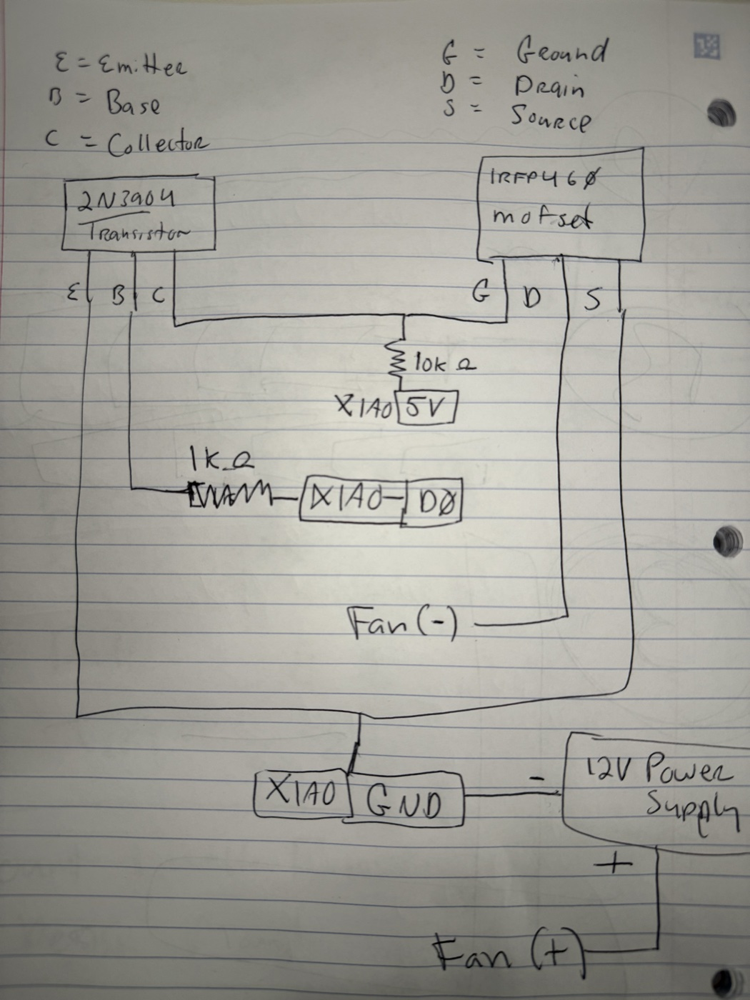
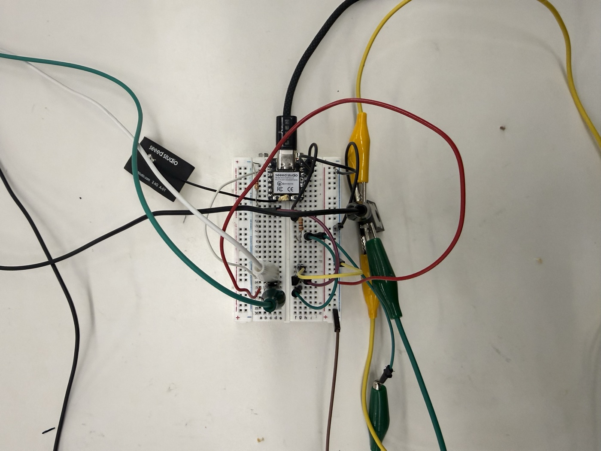

I teamed up with Chloe and Gurmani to design a remote control dragon. I'm already implementing networking for my final project but this was an opportunity to integrate our previous rotary encoder PCB and enclosure into a new project.
The goal was to use ESPNOW to communicate between a remote and a dragon controller, such that the remote could turn the dragon's breath on, and a rotary encoder could control the blinking of its eyes.
See Gurmani or Chloe's site for design details.


The software for the remote and dragon are in a public repo for Remote Control Dragon. No third party libraries — everything uses the espressif package. More descriptions of sequences in this repo readme.

The remote is a simple PCB and clickable rotary encoder. When activated, it attempts to pair with the dragon via ESPNOW radio. It uses a simple Message struct and types for REQUEST, ACK, and then a CONTROL type. Control can signal ON/OFF or INTENSITY (0-100) for the blink rate.
Basic mode was:
We initially were going to have the remote's rotary controller modulate the speed of a fan, but changing the voltage wasn't material to the output. We also realized the fans required more than 5v so we had to use an external power supply. It didn't occur to us that this could be driven by a motor driver... so we ended up creating our own motor driver (more on that below).


We wanted to do this through a digital MOSFET so we could power it with a 3v digital pin but we didn't have one available. So we used a 2N3904 transistor to send 5V to the gate of the IRFP460 MOSFET (required to move it) to allow 12v to flow through to the motor.
It worked well, the only issue was the resistors on the circuit weren't big enough to stop the motor from energizing for a split second when the system powered up.